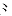
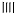

第三代五笔字型（新世纪版）是在86版和98版的基础上优化创新而来，与86、98版的根本区别， 在于字根数量及键位安排有许多变化。
以下凡是提到“五笔字型”，均指新世纪版（第三代）五笔字型。
一、认识五笔字型键盘
五笔字型采用标准英文键盘的26个字母键输入汉字。每个汉字，每条词汇最多打4下键。
汉字是由字根构成的。我们将构成汉字的字根，优选归纳为125种，也称作“码元”， 分配在除Z键以外的25个英文字母键上，形成了五笔字型的“字根键盘”。
新世纪版五笔字型字根键位图：
二、键盘上字根的记忆规律
在五笔字型键盘上，多数字根（码元）的安排都是有规律的。
字根键盘分为5个区，区号为1～5；每一个区，各有5个键位，位号也是1～5，从键盘中部向外端排列； 区号与位号组合，共形成5×5=25个代码，即区位码：11…15,21…51…55。其规律性如下：
1、字根所在的"区号"与"首笔代码"一致。
① 横起笔的字根，在第1区——“王土大木工”的首笔代号为1；② 竖起笔的字根，在第2区——“目日口田山”的首笔代号为2；
③ 撇起笔的字根，在第3区——“禾白月人金”的首笔代号为3；
④ 点起笔的字根，在第4区——“言立水火之”的首笔代号为4；
⑤ 折起笔的字根，在第5区——“已子女又幺”的首笔代号为5。
2、位号基本上与码元的次笔代码一致。例如：
3、单笔画的“个数”，与所在的“位号”一致
一、丨、丿、丶、乙都在相应区的第1位；
二、、、、都在各区的第2位；
三、、 、氵、都在各区的第3位；
、 灬都在各区的第2位；
4、从字根上“直读”区位号
依照以上3条规律，根据字根的“前两个笔画”，可立即“直读”出“字根”的区位号 （即：前2个笔画的代号连在一起念，就是区位号！）：
4例：参—— 厶 大 彡
厶：首笔为折（5），次笔为点（4），故“厶”在第5区第4位（54、C）
大：首笔为横（1），次笔为撇（3），故“大”在第1区第3位（13、D）
彡：首笔为撇（3），次笔为撇（3），故“彡”在第3区第3位（33、E）
又如：琼—— 王 亠 口 小
王：首笔为横（1），次笔为横（1），故“王”在第1区第1位（11、G）
亠：首笔为点（4），次笔为横（1），故“亠”在第4区第1位（41、Y）
口：首笔为竖（2），故在第2区（不能按次笔设位），（23、K）
小：形似，3个点，“小”随安排在4区3位（43、I）。
为了便于对比记忆，本章以下各节将5区各5位的字根及助记词，分区介绍并给出练习题， 以便熟习各个键位上有哪些字根。